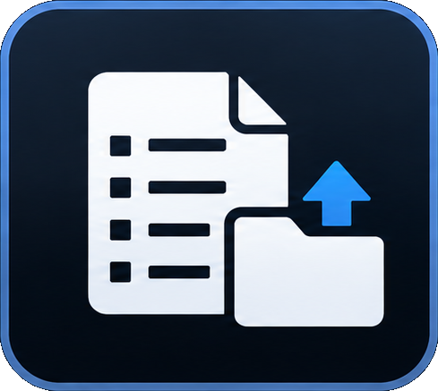

Programm anlegen Build a programme
Grundfunktionen Basic steps
Neue Playlist. Playlist verwalten

, links vom Import . Einen Namen vergeben, nicht „unbekannt“. New playlist. Manage playlists , to the left of Import . Give it a real name, not “untitled”.Speichern
 .
Es entsteht ein Ordner dieses Namens im Playlistpfad. Die Playlist liegt darin.
Save .
A folder of that name is created in the playlist path. The playlist is stored there.
.
Es entsteht ein Ordner dieses Namens im Playlistpfad. Die Playlist liegt darin.
Save .
A folder of that name is created in the playlist path. The playlist is stored there.
Medien importieren . Datei oder ganzer Ordner. Zuerst erscheinen die Medienverzeichnisse und eingehängte Laufwerke. Import media . A file or a whole folder. Media directories and plugged-in drives are offered first.
Reihenfolge. Einträge ziehen. Der Pfeil links ist der Film, der als nächstes läuft. Order. Drag the rows. The arrow on the left is the clip that plays next.
Noch einmal speichern. Ohne Änderung ist der Knopf inaktiv. Mit Autosave zeigt er das Auto-Icon

. Save again. With nothing to write, the button is inactive. Autosave shows the auto icon .